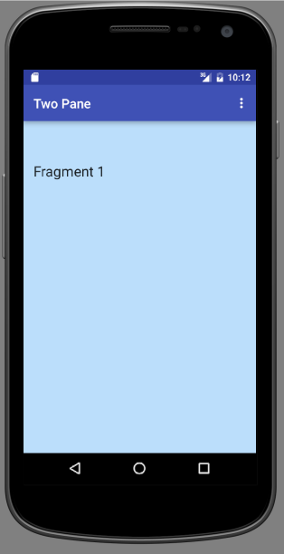

Fragments
In the previous lab we gained experience in using single-pane screens, a pane containing only a single fragment. Here we develop a simple application to demonstate how two fragments may be successively rendered on a single pane in portrait mode. We provide the same feature in landscape mode but additionaly allow the simultaneous rendering of an additional fragment. This is sometimes referred to as the master-detail pattern.
Preview
Many strategies exist for creating screen layouts. Some of these are discussed in the official documentation article Design for Multiple Tablet Orientations. In this lab we provide a simple demonstration of the master-detail pattern in landscape mode. A single pane (activity) simultaneously hosts two fragments.
In portrait mode in the demonstration, a pane may support only one fragment at any one time. A menu option is provided to attach either of two fragments to a single activity. This is illustrated here in Figures 1 and 2.


Baseline app
Using Android Studio IDE create a baseline app, selecting an empty activity and wizard default values. To facilitate direct use of code snippets in this lab, choose wit.ie as domain and Two Pane as the app name. The aim is to ensure your applicationId as shown below in the sample gradle file is `ie.wit.twopane'.
Change to app build.gradle to align with the Android SDK NUC configuration.
apply plugin: 'com.android.application'
android {
compileSdkVersion 25
buildToolsVersion "25.0.3"
defaultConfig {
applicationId "ie.wit.twopane"
minSdkVersion 19
targetSdkVersion 25
versionCode 1
versionName "1.0"
testInstrumentationRunner "android.support.test.runner.AndroidJUnitRunner"
}
buildTypes {
release {
minifyEnabled false
proguardFiles getDefaultProguardFile('proguard-android.txt'), 'proguard-rules.pro'
}
}
}
dependencies {
compile fileTree(dir: 'libs', include: ['*.jar'])
androidTestCompile('com.android.support.test.espresso:espresso-core:2.2.2', {
exclude group: 'com.android.support', module: 'support-annotations'
})
compile 'com.android.support:appcompat-v7:25.3.1'
compile 'com.android.support.constraint:constraint-layout:1.0.2'
testCompile 'junit:junit:4.12'
}Initialize a git repository, provide a .gitignore file, add and commit with an appropriate message. Continue with successive steps to add and commit, thus providing a meaningful history for the lab.
Here is a sample gitignore file:
#built application files
*.apk
*.ap_
.idea
# files for the dex VM
*.dex
# Java class files
*.class
# generated files
bin/
gen/
# Local configuration file (sdk path, etc)
local.properties
# Windows thumbnail db
Thumbs.db
# OSX files
.DS_Store
# Android Studio
# https://www.jetbrains.com/idea/help/project.html
*.iml
.gradle
build/Layouts
For ease of identification we shall colour fragment backgrounds. Add the following colours to the colors.xml file in res/values:
<color name="pink100">#F8BBD0</color>
<color name="purple100">#E1BEE7</color>
<color name="indigo100">#C5CAE9</color>
<color name="blue100">#BBDEFB</color>
<color name="orange200">#FFCC80</color>See the Android Material Palette for a full range of colours.
In res/layout create a file named activity_fragment_container.xml with the following content:
<?xml version="1.0" encoding="utf-8"?>
<FrameLayout xmlns:android="http://schemas.android.com/apk/res/android"
android:id="@+id/detailFragmentContainer"
android:layout_width="match_parent"
android:layout_height="match_parent"/>This framelayout will be used as a container for a number of fragments that we shall work with and which we shall define shortly.
Create another layout file named fragment_1.xml:
<?xml version="1.0" encoding="utf-8"?>
<RelativeLayout
xmlns:android="http://schemas.android.com/apk/res/android"
xmlns:tools="http://schemas.android.com/tools"
android:layout_width="match_parent"
android:layout_height="match_parent"
android:paddingBottom="@dimen/activity_vertical_margin"
android:paddingLeft="@dimen/activity_horizontal_margin"
android:paddingRight="@dimen/activity_horizontal_margin"
android:paddingTop="@dimen/activity_vertical_margin"
android:background="@color/blue100"
tools:context="ie.wit.twopane.MainActivity">
<TextView
android:layout_width="wrap_content"
android:layout_height="wrap_content"
android:textAppearance="?android:attr/textAppearanceLarge"
android:text="Fragment 1"
android:id="@+id/textViewFrag1"
android:layout_marginTop="46dp"
android:layout_alignParentStart="true"/>
</RelativeLayout>Refactor the name of activity_main.xml, changing it to fragment_2.xml and replacing its content with the following:
<?xml version="1.0" encoding="utf-8"?>
<RelativeLayout
xmlns:android="http://schemas.android.com/apk/res/android"
xmlns:tools="http://schemas.android.com/tools"
android:layout_width="match_parent"
android:layout_height="match_parent"
android:paddingBottom="@dimen/activity_vertical_margin"
android:paddingLeft="@dimen/activity_horizontal_margin"
android:paddingRight="@dimen/activity_horizontal_margin"
android:paddingTop="@dimen/activity_vertical_margin"
android:background="@color/indigo100"
tools:context="ie.wit.twopane.MainActivity">
<TextView
android:layout_width="wrap_content"
android:layout_height="wrap_content"
android:textAppearance="?android:attr/textAppearanceLarge"
android:text="Fragment 2"
android:id="@+id/textViewFrag2"
android:layout_marginTop="46dp"
android:layout_alignParentStart="true"/>
</RelativeLayout>To resolve the @dimens errors in the above XML, create a new "values resource file" in the res/values folder. Call this file dimens.xml and copy the following code into it:
<?xml version="1.0" encoding="utf-8"?>
<resources>
<dimen name="activity_vertical_margin">16dp</dimen>
<dimen name="activity_horizontal_margin">16dp</dimen>
</resources>Fragment (Java)
Corresponding to the 2 fragment layouts just defined, add the following two Java fragments in ie.wit.twopane:
Fragment_1.java
package ie.wit.twopane;
import android.os.Bundle;
import android.support.v4.app.Fragment;
import android.view.LayoutInflater;
import android.view.View;
import android.view.ViewGroup;
public class Fragment_1 extends Fragment
{
@Override
public void onCreate(Bundle savedInstanceState) {
super.onCreate(savedInstanceState);
}
@Override
public View onCreateView(LayoutInflater inflater, ViewGroup parent, Bundle savedInstanceState) {
View v = inflater.inflate(R.layout.fragment_1, parent, false);
return v;
}
}Fragment_2.java
package ie.wit.twopane;
import android.os.Bundle;
import android.support.v4.app.Fragment;
import android.view.LayoutInflater;
import android.view.View;
import android.view.ViewGroup;
public class Fragment_2 extends Fragment
{
@Override
public void onCreate(Bundle savedInstanceState) {
super.onCreate(savedInstanceState);
}
@Override
public View onCreateView(LayoutInflater inflater, ViewGroup parent, Bundle savedInstanceState) {
View v = inflater.inflate(R.layout.fragment_2, parent, false);
return v;
}
}Activity
Refactor the default MainActivity Java file as follows:
Add an ActionBar field:
ActionBar actionBar;Initialize it in onCreate:
actionBar = getSupportActionBar();Provide this import:
import android.support.v7.app.ActionBar;In onCreate, update setContentView to use our layout container:
setContentView(R.layout.activity_fragment_container);Use the FragmentManager to add and commit a new transaction using an instance of a fragment as a parameter. Add this code snippet to the end of onCreate:
FragmentManager manager = getSupportFragmentManager();
Fragment fragment = manager.findFragmentById(R.id.detailFragmentContainer);
if (fragment == null)
{
fragment = new Fragment_1();
manager.beginTransaction().add(R.id.detailFragmentContainer, fragment).commit();
}These import statements are required:
import android.support.v4.app.Fragment;
import android.support.v4.app.FragmentManager;Build and run the app. The output should resemble that in Figure 1.

Fragments (menu)
We shall now provide the following features. These, it must be stressed, are purely for test and demonstration purposes and would not feature in production-standard code.
- A menu with options to attach either of Fragment 1 and Fragment 2.
- The necessary Java code to implement the menu selection.
Menu
Create a menu directory in res. Within this create a menu resource file menu_twopane.xml with the following content:
<?xml version="1.0" encoding="utf-8"?>
<menu xmlns:android="http://schemas.android.com/apk/res/android"
xmlns:app="http://schemas.android.com/apk/res-auto"
xmlns:tools="http://schemas.android.com/tools"
tools:context="org.wit.myrent.ResidenceActivity">
<item
android:id="@+id/fragment_1"
android:orderInCategory="100"
android:title="@string/fragment_1"
app:showAsAction="never" />
<item
android:id="@+id/fragment_2"
android:orderInCategory="100"
android:title="@string/fragment_2"
app:showAsAction="never" />
</menu>Add the referenced strings in the strings.xml file:
<string name="fragment_1">Fragment 1</string>
<string name="fragment_2">Fragment 2</string>Override onCreateOptionsMenu in MainActivity:
@Override
public boolean onCreateOptionsMenu(Menu menu) {
MenuInflater inflater = getMenuInflater();
inflater.inflate(R.menu.menu_twopane, menu);
// return true so that the menu pop up is opened
return true;
}Override onOptionsItemSelected, also in MainActivity.
@Override
public boolean onOptionsItemSelected(MenuItem item) {
switch (item.getItemId()) {
case R.id.fragment_1:
Log.d("Twopane", "Fragment 1 attaching");
return true;
case R.id.fragment_2:
Log.d("Twopane", "Fragment 2 attaching");
return true;
default:
return super.onOptionsItemSelected(item);
}
}These import statements will be required:
import android.util.Log;
import android.view.Menu;
import android.view.MenuInflater;
import android.view.MenuItem;Build and run the app. Exercise the menus. Check the logcat pane and verify the log messages in onOptionsItemSelected are displayed.
Fragments (swap)
Refactor MainActivty to allow menu choice to determine which fragment is displayed:
Create a method replacementFragment:
/**
* @param replacementFragment The fragment to be displayed, replacing existing fragment.
*/
private void swapFragments(Fragment replacementFragment) {
FragmentManager manager = getSupportFragmentManager();
FragmentTransaction transaction = manager.beginTransaction();
// Replace whatever is in the fragment_container view with this fragment,
transaction.replace(R.id.detailFragmentContainer, replacementFragment)
.addToBackStack(null) // and add the transaction to the back stack
.commit(); // Commit the transaction
}You will need to import:
import android.support.v4.app.FragmentTransaction;Invoke this new method in response to a menu selection, using the appropriate fragment as a parameter. Here is the refactored menu handler:
@Override
public boolean onOptionsItemSelected(MenuItem item) {
switch (item.getItemId()) {
case R.id.fragment_1:
swapFragments(new Fragment_1());
Log.d("Twopane", "Fragment 1 attaching");
return true;
case R.id.fragment_2:
swapFragments(new Fragment_2());
Log.d("Twopane", "Fragment 2 attaching");
return true;
default:
return super.onOptionsItemSelected(item);
}
}Build and run the app. Exercise the menu and verify that the appropriate fragment is displayed in response to a particular menu option choice. This should work both in portrait and landscape mode.
Master-Detail pattern
We now implement the master-detail pattern in landscape mode. In portrait mode, no change in the functionality of the app should be apparent.
This requires the introduction of the following:
- A landscape version of
activity_fragment_container.xml. This will be located in a new folder namedlayout-landand contain two FrameLayout elements:- one for the new fragment (Fragment Main),
- the other for the particular fragment chosen by the menu selection (Fragment 1 or Fragment 2).
- A new third fragment to represent the view on the left side of the screen (Fragment Main).
This new feature is illustrated in Figure 1. The menu item Fragment Main is not required in landscape mode. It is left as an exercise to hide this option.

Create a new resource directory called 'layout-land'. If you can't see it in your Project pane, switch the view to "Project" and you should see it.
Create a new res/layout-land/activity_fragment_container.xml file (the code is below).
- Observe that it contains two framelayouts (the portrait version only has one).
- Note the first framelayout (+id/fragmentContainer) is intended for the left-hand fragment in the landscape 2-fragment pane. The second framelayout (+id/detailFragmentContainer) is the one we used in the portrait view.
<?xml version="1.0" encoding="utf-8"?>
<LinearLayout xmlns:android="http://schemas.android.com/apk/res/android"
android:layout_width="match_parent"
android:layout_height="match_parent"
android:divider="?android:attr/dividerHorizontal"
android:showDividers="middle"
android:background="@color/orange200"
android:orientation="horizontal">
<FrameLayout xmlns:android="http://schemas.android.com/apk/res/android"
android:id="@+id/fragmentContainer"
android:layout_width="0dp"
android:layout_height="match_parent"
android:layout_weight="1"/>
<FrameLayout
android:id="@+id/detailFragmentContainer"
android:layout_width="0dp"
android:layout_height="match_parent"
android:layout_weight="3" />
</LinearLayout>Refactor MainActivity as follows.
First, we require a means of determining whether the application is in portrait or landscape mode. A number of approaches are possible. Our approach is to obtain the current width and height of the screen in pixels. If the width is less than the height then the screen is in portrait mode.
/**
* Determines screen orientation by examining screen width and height
* If the width is less than the height then the orientation is portrait.
*
* @return The screen orientation, portrait (1) or landscape (2).
*/
public int screenOrientation() {
DisplayMetrics dm = getApplicationContext().getResources().getDisplayMetrics();
int w = dm.widthPixels;
int h = dm.heightPixels;
return w < h ? Configuration.ORIENTATION_PORTRAIT : Configuration.ORIENTATION_LANDSCAPE;
}The above code requires these import statements:
import android.content.res.Configuration;
import android.util.DisplayMetrics;Create a FragmentManager field. We make this choice because we will be using fragment manager repeatedly.
FragmentManager manager;In onCreate the manager is already created and intialised:
FragmentManager manager = getSupportFragmentManager();Refactor this line to instantiate the global field instead of a local one:
manager = getSupportFragmentManager();In the interest of conciseness, create two constants to represent portrait and landscape modes:
public static final int PORTRAIT = Configuration.ORIENTATION_PORTRAIT;
public static final int LANDSCAPE = Configuration.ORIENTATION_LANDSCAPE;In onCreate, following the initialization of fragmentManager, create an if-else block:
if (screenOrientation() == PORTRAIT) {
} else { // Orientation is landscape
}In the first if-else block attach fragment 1. This is the default display. Note that we already have this code in the onCreate method; we just need to move it into the "if" section.
Fragment fragment = manager.findFragmentById(R.id.detailFragmentContainer);
if (fragment == null){
fragment = new Fragment_1();
manager.beginTransaction().add(R.id.detailFragmentContainer, fragment).commit();
}Also insert this line into the "if" part, to log our orientation:
Log.d("Twopane", "Orientation: " + screenOrientation());Here is the code for the second block (i.e. the else part):
// attach Fragment 1 to the right frame
Fragment fragment = manager.findFragmentById(R.id.detailFragmentContainer);
if (fragment == null) {
fragment = new Fragment_1();
manager.beginTransaction()
.add(R.id.detailFragmentContainer, fragment)
.commit();
}
// attach Fragment Main to the left frame
fragment = manager.findFragmentById(R.id.fragmentContainer);
if(fragment == null) {
fragment = new Fragment_main();
manager.beginTransaction()
.add(R.id.fragmentContainer, fragment)
.commit();
}
Log.d("Twopane", "Orientation: " + screenOrientation());For reference, here is the complete class. Errors will be generated. These will be resolved in the next step.
package ie.wit.twopane;
import android.content.res.Configuration;
import android.support.v4.app.Fragment;
import android.support.v4.app.FragmentManager;
import android.support.v4.app.FragmentTransaction;
import android.support.v7.app.ActionBar;
import android.support.v7.app.AppCompatActivity;
import android.os.Bundle;
import android.util.DisplayMetrics;
import android.util.Log;
import android.view.Menu;
import android.view.MenuInflater;
import android.view.MenuItem;
public class MainActivity extends AppCompatActivity {
public static final int PORTRAIT = Configuration.ORIENTATION_PORTRAIT;
public static final int LANDSCAPE = Configuration.ORIENTATION_LANDSCAPE;
ActionBar actionBar;
FragmentManager manager;
@Override
protected void onCreate(Bundle savedInstanceState) {
super.onCreate(savedInstanceState);
setContentView(R.layout.activity_fragment_container);
actionBar = getSupportActionBar();
manager = getSupportFragmentManager();
if (screenOrientation() == PORTRAIT) {
Fragment fragment = manager.findFragmentById(R.id.detailFragmentContainer);
if (fragment == null) {
fragment = new Fragment_1();
manager.beginTransaction()
.add(R.id.detailFragmentContainer, fragment)
.commit();
}
Log.d("Twopane", "Orientation: " + screenOrientation());
}
else { // Orientation is landscape
// attach Fragment 1 to the right frame
Fragment fragment = manager.findFragmentById(R.id.detailFragmentContainer);
if (fragment == null) {
fragment = new Fragment_1();
manager.beginTransaction()
.add(R.id.detailFragmentContainer, fragment)
.commit();
}
// attach Fragment Main to the left frame
fragment = manager.findFragmentById(R.id.fragmentContainer);
if(fragment == null) {
fragment = new Fragment_main();
manager.beginTransaction()
.add(R.id.fragmentContainer, fragment)
.commit();
}
Log.d("Twopane", "Orientation: " + screenOrientation());
}
}
@Override
public boolean onCreateOptionsMenu(Menu menu) {
MenuInflater inflater = getMenuInflater();
inflater.inflate(R.menu.menu_twopane, menu);
// return true so that the menu pop up is opened
return true;
}
@Override
public boolean onOptionsItemSelected(MenuItem item) {
switch (item.getItemId()) {
case R.id.fragment_1:
swapFragments(new Fragment_1());
Log.d("Twopane", "Fragment 1 attaching");
return true;
case R.id.fragment_2:
swapFragments(new Fragment_2());
Log.d("Twopane", "Fragment 2 attaching");
return true;
default:
return super.onOptionsItemSelected(item);
}
}
/**
* @param replacementFragment The fragment to be displayed, replacing existing fragment.
*/
private void swapFragments(Fragment replacementFragment) {
FragmentManager manager = getSupportFragmentManager();
FragmentTransaction transaction = manager.beginTransaction();
// Replace whatever is in the fragment_container view with this fragment,
transaction.replace(R.id.detailFragmentContainer, replacementFragment)
.addToBackStack(null) // and add the transaction to the back stack
.commit(); // Commit the transaction
}
/**
* Determines screen orientation by examining screen width and height
* If the width is less than the height then the orientation is portrait.
*
* @return The screen orientation, portrait (1) or landscape (2).
*/
public int screenOrientation() {
DisplayMetrics dm = getApplicationContext().getResources().getDisplayMetrics();
int w = dm.widthPixels;
int h = dm.heightPixels;
return w < h ? Configuration.ORIENTATION_PORTRAIT : Configuration.ORIENTATION_LANDSCAPE;
}
}Master-Detail (Fragment)
We require a new fragment to locate in the left-most position in the landscape master-detail pane.
Fragment_main
package ie.wit.twopane;
import android.os.Bundle;
import android.support.v4.app.Fragment;
import android.view.LayoutInflater;
import android.view.View;
import android.view.ViewGroup;
public class Fragment_main extends Fragment
{
@Override
public void onCreate(Bundle savedInstanceState) {
super.onCreate(savedInstanceState);
}
@Override
public View onCreateView(LayoutInflater inflater, ViewGroup parent, Bundle savedInstanceState) {
View v = inflater.inflate(R.layout.fragment_main, parent, false);
return v;
}
}Add a corresponding menu item:
<item
android:id="@+id/fragment_main"
android:orderInCategory="100"
app:showAsAction="never"
android:title="@string/fragment_main"/>And the referenced string:
<string name="fragment_main">Fragment Main</string>A layout named fragment_main is referenced in Fragment_main.java.
File: res/layout/fragment_main.xml:
<?xml version="1.0" encoding="utf-8"?>
<RelativeLayout
xmlns:android="http://schemas.android.com/apk/res/android"
xmlns:tools="http://schemas.android.com/tools"
android:layout_width="match_parent"
android:layout_height="match_parent"
android:paddingBottom="@dimen/activity_vertical_margin"
android:paddingLeft="@dimen/activity_horizontal_margin"
android:paddingRight="@dimen/activity_horizontal_margin"
android:paddingTop="@dimen/activity_vertical_margin"
android:background="@color/purple100"
tools:context="ie.wit.twopane.MainActivity">
<TextView
android:layout_width="wrap_content"
android:layout_height="wrap_content"
android:textAppearance="?android:attr/textAppearanceLarge"
android:text="@string/fragment_main"
android:id="@+id/textViewFragMain"
android:layout_marginTop="46dp"
android:layout_alignParentStart="true"/>
</RelativeLayout>Build, run and exercise the menu options in both landscape and portrait and verify expected behaviour as shown in Figures 1 and 2 in step 01.
[1] Hide the menu option Fragment Main in landscape mode in the Master-Detail pattern. See Stackoverflow article - How do I hide a menu item in the actionbar?
[2] Examine the code in the previous lab. The activity-fragment design contains a fundamental error:
- Can you identify it?
- Any suggestions on how to correct it?